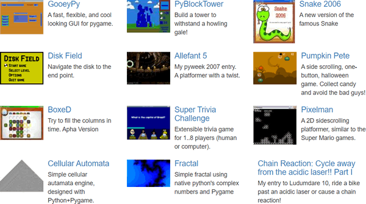
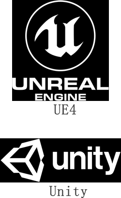

Pygame是什么
Python 是当下最为火热，且功能最为全面的一门编程语言。Python 之所以深受大家喜爱， 除了可以被应用到“人工智能”领域之外，还可以延伸到数据分析、Web 开发、自动化测试、自然语言处理、游戏开发等各个领域。这一切的实现得益于 Python 有一个强大的第三方库（网址：https://pypi.org/），这个第三方库相当于一个手机软件市场，允许我们随意下载各式各样的软件包，并且开箱即用，这大大提高了 Python 语言的编程效率和实用性。
顾名思义，Pygame 是一个专门用来开发游戏的 Python 模块，主要为开发、设计 2D 电子游戏而生，它是一个免费、开源的第三方软件包，支持多种操作系统，具有良好的跨平台性（比如 Windows、Linux、Mac 等）。Pygame 是 Pete Shinners 在 SDL（Simple DirectMedia Layer，一套开源的跨平台多媒体开发库）基础上开发而来，其目的是取代 PySDL。
图1：Pygame
图2：SDL
通过 Pygame 我们能够创建各种各样的游戏和多媒体程序，但相比于开发大型 3D 游戏来说，它更擅长与开发 2D 游戏，比如扫雷、纸牌游戏、贪吃蛇、超级马里奥、飞机大战等，如果是 3D 游戏，可以选择一些功能更为全面的 Python 游戏开发库，比如 Panda3D（迪士尼开发的3D游戏引擎），PyOgre（Ogre 3D渲染引擎）等。
Python 作为一门解释型语言并不适合开发大型的 3D 游戏，但 Python 通过对其他语言的接口封装，使自身具备了开发大型 3D 游戏的能力，例如 Panda3D 的底层是用 C++ 语言编写的。一些较为知名的 3D 游戏，比如魔兽世界、文明帝国4、战地风云2，这些游戏都是使用 Python 语言开发的，而国内较为知名的“阴阳师”手游，也是由 Python 语言开发而成。
通过官网可以很方便地找到并下载这些游戏。—> 点击前往。这些项目案例能为您开发自己的游戏提供一些思路和帮助。
假如您从来没有接触过游戏开发，那么学习 Pygame 是一个不错的选择，它非常适合初学者学习，您可以把它当做进入游戏开发世界的“敲门砖”，通过对 Pygame 的学习，您将了解到更为广阔的世界。
“如果说我比其他人看的更远，那是因为我站在巨人的肩膀上。”第三方库就相当于巨人，它为程序开发者们提供了众多现成的模块。
接下来，我们要讲的 Pygame 就是第三库中非常有趣、实用的一个模块。顾名思义，Pygame 是一个专门用来开发游戏的 Python 模块，主要为开发、设计 2D 电子游戏而生，它是一个免费、开源的第三方软件包，支持多种操作系统，具有良好的跨平台性（比如 Windows、Linux、Mac 等）。Pygame 是 Pete Shinners 在 SDL（Simple DirectMedia Layer，一套开源的跨平台多媒体开发库）基础上开发而来，其目的是取代 PySDL。
图1：Pygame
截止到 2020 年 10 月 28 日，Pygame 已经诞生 20 周年。
SDL 是一套开放源代码的跨平台多媒体开发库，使用 C语言编写，它提供了多种控制图像、声音、输入/输出的函数，Pygame 可以看做是对 SDL 的封装，在 SDL 库基础上提供了各种 Python 的 API接口。目前 SDL 主要用于多媒体领域，比如开发游戏、模拟器、媒体播放器等。图2：SDL
Python 作为一门解释型语言并不适合开发大型的 3D 游戏，但 Python 通过对其他语言的接口封装，使自身具备了开发大型 3D 游戏的能力，例如 Panda3D 的底层是用 C++ 语言编写的。一些较为知名的 3D 游戏，比如魔兽世界、文明帝国4、战地风云2，这些游戏都是使用 Python 语言开发的，而国内较为知名的“阴阳师”手游，也是由 Python 语言开发而成。
“俗话说，术业有专攻”，每一种语言都有自己擅长的一方面，不能因为某种语言不适合某一领域，就认为它是劣质语言。
Pygame 官方网站（https://www.pygame.org/tags/all）提供许多丰富的游戏案例，它们全部使用 Pygame 开发，如下所示：

图3：Pygame官方案例
图3：Pygame官方案例
通过官网可以很方便地找到并下载这些游戏。—> 点击前往。这些项目案例能为您开发自己的游戏提供一些思路和帮助。
假如您从来没有接触过游戏开发，那么学习 Pygame 是一个不错的选择，它非常适合初学者学习，您可以把它当做进入游戏开发世界的“敲门砖”，通过对 Pygame 的学习，您将了解到更为广阔的世界。
扩展知识
如果您想做专业的游戏开发工程师，建议学习 C/C++、C# 语言，这些语言虽然语法略显复杂，但是其性能相比于 Python 来说要好的多。就当下而言，市面上最为流行的游戏开发平台（即游戏引擎）分别是 Unity 和 UE4，这两个平台的侧重点不同，前者适合于移动端游戏的开发（支持 C# 语言），而后者更偏向于 PC 端游戏的开发（支持 C++ 语言），此处不做深入探讨，如果您对它们感兴趣的话，可以自行研究。

图4：游戏开发引擎
图4：游戏开发引擎
UE4 和 Uinty 开发了许多优秀的游戏，比如 UE4 开发了《绝地求生：刺激战场》，而 Unity 开发了《使命召唤手游版》。
关注公众号「站长严长生」，在手机上阅读所有教程，随时随地都能学习。内含一款搜索神器，免费下载全网书籍和视频。

微信扫码关注公众号